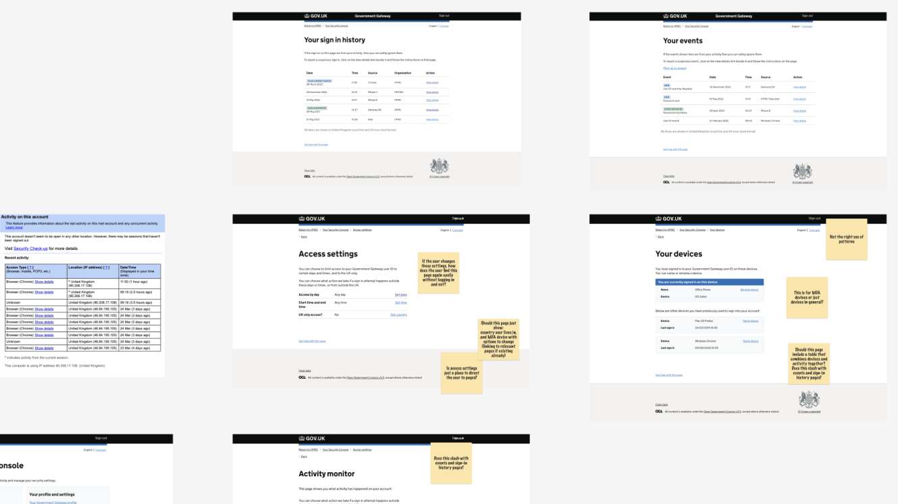
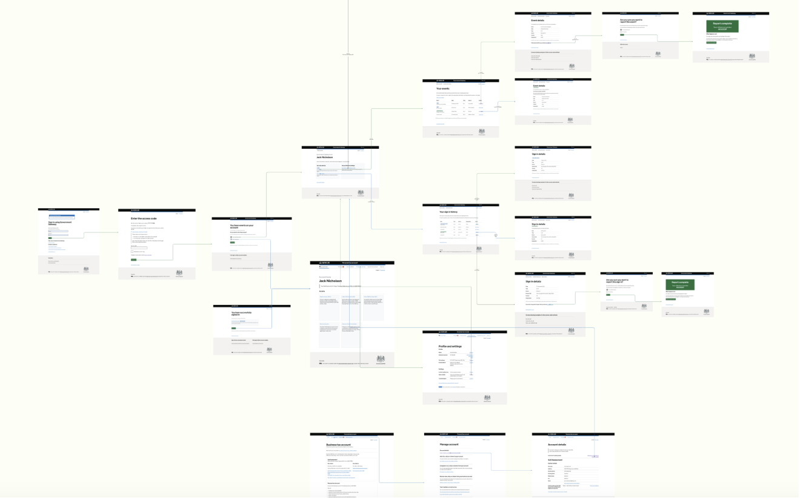
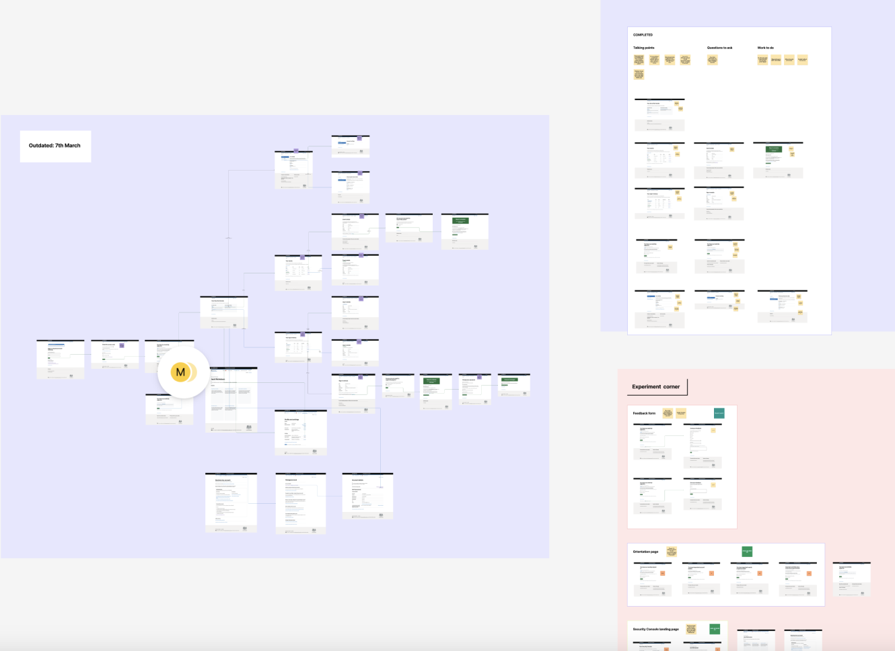
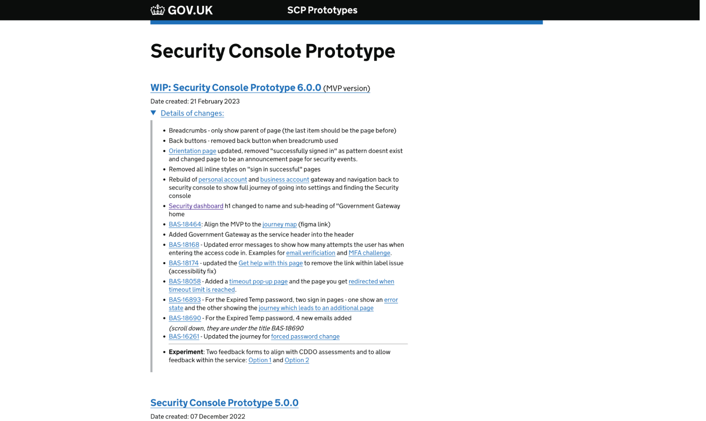

<article>
<section>
    <div class="wrapper">
        <div class="grid-full">

<h1 class="ralph">Designing a safer Government Gateway</h1>
</div>
<div class="marginbottom--m"></div>

<div class="grid-full">
    
</div>
<div class="marginbottom--l"></div>


<div class="grid-full leftpusher10" style="max-width: 794px;">
<h3 class="emma">Introduction</h3>
    <p>As HMRC digital services continue to evolve, we are providing customers with more sensitive data to help them get their tax right the first time. Cybercrime is a threat to any business that operates financial services online, and HMRC is no exception. We have a strong track record of preventing £1.5 billion in fraud attempts each year.<br>
      Given these circumstances, there is a need to provide users with a digital support route when they report suspected fraudulent activity on their Government login account. This will make it easier for them to know which number or department to contact, and enable aligned teams to respond to these reports promptly.
    </p>

    <h3 class="emma">The goal</h3>
    <p>The objective of this project is to create a hub called "The Security Console" that will enhance transparency for customers by showing who has accessed and modified their Government Gateway account. This hub will provide a clear digital reporting route for customers to report any early signs of being targeted by cybercriminals. By giving customers access to digital interaction data, it will enable the public to participate in monitoring their tax accounts and reporting any suspicious activity. <br>
      It's important to note that all HMRC customer data will remain confidential, and the response to any account threats will be prompt and effective.</p>

</div>
</div>
<div class="wrapper">

  <div class="grid-full leftpusher10" style="max-width: 794px;">
    <h3 class="emma">What do we know?</h3>
    <p>The issue of users reporting threats to Government accounts has persisted, leading to an increase in customer complaints and dissatisfaction. The Security Console is required by both HMRC and the public to address this problem. 
      Due to the lack of a single point of contact for such issues, it is challenging to track how many customers are affected. Nonetheless, hundreds of referrals are made each month for just two types of tax. In one isolated incident, we saw almost 9,000 accounts tested by a single crime group in just 48 hours.</p>
      <p>While there is certainly room for improvement from a user perspective, there is also an opportunity for the business to work towards a mutually beneficial solution.</p> 

    <h3 class="emma">What I did</h3>
    <p>At the outset of the project, I was tasked with taking over from the outgoing Interaction Designer and completing some outstanding tasks. I was then asked to review the entire service, leveraging my expertise in accessibility, design systems and notifications.</p>
  </div>
  <div class="grid-full">
    
  </div>
    <div class="grid-full leftpusher10" style="max-width: 794px;">    
    <p>During my initial meetings, I observed that the design team wasn't presenting their work to the core team or the wider community. I felt that showcasing our work and explaining the reasoning behind design decisions was vital for receiving feedback and improving the service. Therefore, I started meeting with as many people as possible within the core team to empower them to critique the design decisions.</p>
    </div>
    <div class="grid-full">
      
    </div>
    <div class="grid-full leftpusher10" style="max-width: 794px;">
    <p>Following that, I facilitated a team prototype-design-crit that allowed developers to voice their concerns regarding implementing specific parts of the service. Through this process, I identified several "invented" design patterns that could lead to issues with user behaviour and accessibility. I raised this issue with the lead Delivery Manager, who gave me the time to present the issues to the team, suggest design solutions that were already available in the tried and tested design system recommendations and gain agreement and understanding as to why we should revert to using them.</p>
    </div>
    <div class="grid-full">

      
    </div>
    <div class="grid-full leftpusher10" style="max-width: 794px;">
    <p>After studying more about the project's past, I discovered that there was a considerable gap in design leadership, and nobody fully comprehended the user journey from entry to confirmation pages. I discovered inconsistencies and flow issues, which I highlighted to the team, and they agreed with my findings.<br>
    In conclusion, my objective was to promote user-led design, encourage sharing of design work and enhance the user experience by addressing inconsistencies and flow issues.</p>


    <h3 class="emma">Outcomes</h3>
    <p>Within the three months that I was contracted on the project, we managed to cover a lot of work, against a very close and testing timeframe. </p>    
    <ul>
      <li>As a team we managed to completely review the user journey from start to stop, empowering the core and wider team to provide feedback around the feasibility of whether we can even build it and give the project a place to digest all the feedback in a manageable format.</li>
      <li>We provided the stakeholders with the "official" MVP version of what is being launched in a separate prototype, to align and ensure there is no confusion of what is being launched and signed off.</li>
      <li>I brought design and a delivery plan to the table and shared what we shall work on in the future, ensuring developers were included in the plan and forthcoming work.</li>
      <li>Empowered the designers within the team to own their space and helped support them to present their work with confidence.</li>
      <li>Built relationships between the designer and delivery/developer team and ensured a healthy feedback loop was instigated and in place.</li>
      <li>The launch date was reached with a tested and complete project (for MVP) with stakeholders on-board and fully behind the launch.</li>
      <li>Left the project in a much healthier state, ensuring a full handover document was in place for the next team.</li>
    </ul>
</div>

<div class="grid-full">
  
</div>
<div class="grid-full leftpusher10" style="max-width: 794px;">
    <h3 class="font30"><strong>What did I learn</strong></h3>
    <p>This was my return to contracting after leaving Hippo Digital, and it was the perfect fit. The team I joined needed a hands-on design lead to instil confidence in the work already done, as well as ensure the initial solutions were correct, and if not, provide reasoning on why they need more work - which is actually what I spent a lot of my time on initially during the first and second round of reviews. This proved to be very successful and allowing the team time to look at what they had delivered so far, and as the design lead, any time I can provide for reviewing your work is a huge win!</p>

    <p>The power of the Government Gateway and the potential for future opportunities to help users do their taxes and check personal details (and much more) is huge, and I think there is great work to be done and I cannot wait to see what comes next from the team.<br>
    I had a blast on this project, a great team and certainly loved the design challenge and the needs for both user and business.</p>

</div>

<div class="marginbottom--xl"></div>

<div class="grid-full col">
  <div class="CrossPageNavigation">
    <div class="grid-full">
      <div class="CrossPageNavigationPrevious">
        <strong>Go to the next case study</strong><br />
          <a href="russellhobbs-2020.html">Russell Hobbs</a>
      </div>
    </div>
  </div>
</div>

</div>
</div>
</section>
</article>